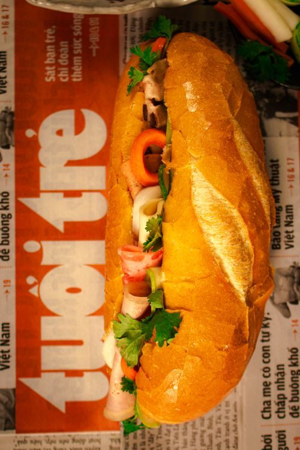
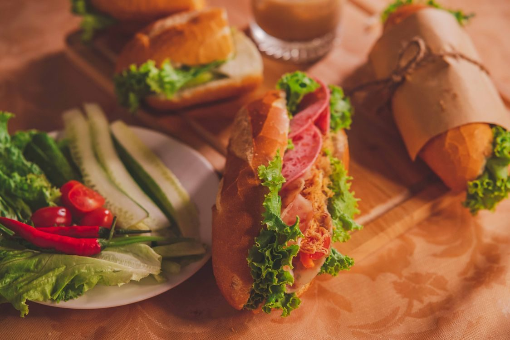
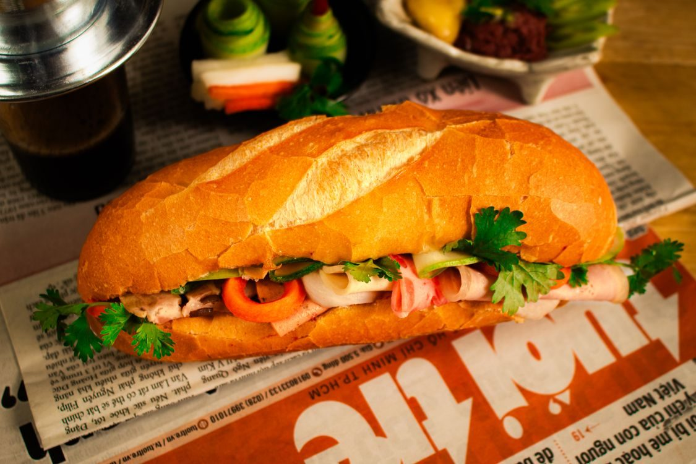

Le's Baguette Banh Mi Cafe is a Vietnamese cafe at 4607 Dryades St in New Orleans. Banh mi built on fresh baguettes, chicken pho, vermicelli bowls, bao buns, and Vietnamese coffee and boba. Dine in with outdoor seating, or take out.

A traditional banh mi. Stock photo.
The cafe centers on banh mi: lemongrass pork, pork belly, BBQ pork belly, honey garlic pork, Korean beef, lemongrass chicken, curry chicken, oyster with remoulade, salmon, prawn, veggie and the house special, on a light, crisp baguette.
Beyond sandwiches: chicken pho, vermicelli bowls, bao buns, spring and egg rolls, cream cheese wontons and rice plates, plus Vietnamese coffee served hot drip or iced, boba and milk tea, beer and wine, and mango sticky rice.
Facebook: https://www.facebook.com/lesbaguettenola

